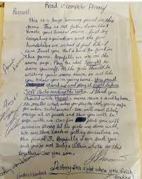

Survivor Fun Facts & Memorable Moments
Survivor has produced some of the most unforgettable and shocking moments in reality TV. Here are a few of the most notable:
JT’s Love Letter
During Survivor: Heroes vs. Villains (Season 20), JT Thomas wrote a love letter to Russell Hantz as part of a dramatic and emotional strategic moment. It reminded fans that Survivor is not just a game of strength, but also one of social connections and personal stories.
Cirie Fields – Voted Out Without a Vote
In Survivor 34: Game Changers, Cirie Fields was voted out at Final 6 **without receiving a single vote against her**. Everyone else had safety through idols or advantages, leaving Cirie as the only eligible player to be eliminated by default, a unique event in Survivor history.
The “Snakes and Rats” Speech
In Survivor: Borneo (Season 1), Sue Hawk delivered the famous “snakes and rats” speech during the jury phase. This moment is one of the earliest examples of Survivor’s intense emotional drama and social confrontation.
Fairplay’s Grandmother Lie
In Survivor: Fiji, Earl “Fairplay” told a false story about his grandmother being sick to manipulate votes and gain sympathy. This deception is one of the most infamous strategic moves in Survivor history.
"Survivor isn’t just about strength—it’s about strategy, social skills, and who can outwit everyone else."
